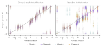
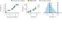
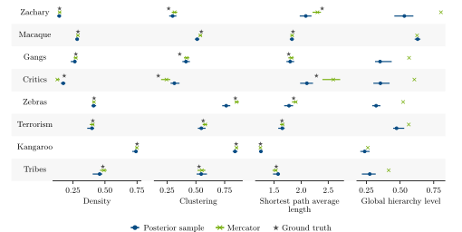
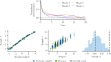
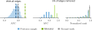
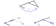
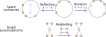

Probabilistic hyperbolic embedding of networks
Combining network geometry with Bayesian inference
Ariane Lizotte
2025-05-06
Creating edges requires a cost
Vertices are placed in metric space. The edge cost increases with its length.
The metric space can be physical (e.g. transportation network, brain network) or not.
Latent hyperbolic space
Graphs obtained from hyperbolic space reproduce many empirically observed properties.
Krioukov, D., et al. Hyperbolic geometry of complex networks. Phys. Rev. E 82, 036106 (2010).
Zuev, K., et al. Emergence of Soft Communities from Geometric Preferential Attachment. Sci. Rep. 5, 9421 (2015).
Krioukov, D., et al. Clustering Implies Geometry in Networks. Phys. Rev. Lett. 116, 208302 (2016).
- Faqeeh, A., et al. Characterizing the Analogy Between Hyperbolic Embedding and Community Structure of Complex Networks. Phys. Rev. Lett. 121, 098301 (2018).
\(\mathbb{H}^2\) and \(\mathbb{S}^1\) random graph models
Each edge \((u, v)\) exists with probability
\(\mathbb{H}^2\) model
\[\begin{align}
\mathbb{P}[(u, v) | x_u, x_v, \beta] = \frac{1}{1+\exp\left\{\beta(d_\mathbb{H}(x_u, x_v) - R)\right\}},
\end{align}\]
where \(d_\mathbb{H}\) is the hyperbolic distance, \(\beta\) is the sigmoid sharpness, \(R\) is the maximal radial coordinate, \(x_u, x_v\in \mathbb{H}^2\) are the positions of vertices \(u\) and \(v\) respectively.
Using an approximation for \(d_\mathbb{H}\), this is equivalent to
\(\mathbb{S}^1\) model
\[\begin{align}
p_{uv} = \frac{1}{1+\left(\frac{d_\mathbb{S}(\theta_u, \theta_v)}{\mu \kappa_u, \kappa_v}\right)^\beta} \approx \mathbb{P}[(u, v) | x_u, x_v, \beta],
\end{align}\]
where \(d_\mathbb{S}\) is the arc length, \(\mu\) is a scaling factor, \(x_u=(r_u, \theta_u)\) is written by its coordinates, \(\kappa_u = \kappa_0 e^{(\hat{R}-r_u)/2}\) is a rescaling of \(r_u\) and \(\kappa_0\) is the minimum degree.
Graph vertex embedding in a nutshell
We want to represent a given graph using a hyperbolic embedding.
\[
\text{Pairs of vertices are}
\begin{cases}
\text{close} & \text{if connected in graph,} \\
\text{far} & \text{if not connected in graph.} \\
\end{cases}
\]
Embedding with maximum likelihood
The likelihood of obtaining a graph \(G=(V, E)\) is simply \[\begin{align}
\mathbb{P}[G|\theta, \kappa, \beta] = \prod_{(u, v)\in V^2} {p_{uv}}^{a_{uv}} (1-p_{uv})^{1-a_{uv}},
\end{align}\] where \(a_{uv}=1\) if \(u\) and \(v\) are connected and is \(0\) otherwise.
Many algorithms give a maximum likelihood estimator (MLE). This is challenging because of the abundance of local maxima.
Current algorithms don’t give the entire picture
Every algorithm
- Papadopoulos, F. et al. Phys. Rev. E 92, 022807 (2015).
- Alanis-Lobato, G. et al. Appl. Netw. Sci. 1, 1–14 (2016).
- Muscoloni, A. et al. Nat. Commun. 8, 1615 (2017).
- García-Pérez, G. et al. New J. Phys. 21, 123033 (2019).
- Wang, Z. et al. J. Stat. Mech.: Theory Exp. 123401 (2019).
- . . .
yields a single embedding.
We currently ignore
- if there exists many plausible embeddings;
- how precise the vertex coordinates are.
We address both issues using a Bayesian approach.
\(\mathbb{S}^1\) Bayesian model
The posterior of the Bayesian \(\mathbb{S}^1\) model is \[\begin{align}
p(\theta, \kappa, \beta | G) \propto \mathbb{P}[G|\theta, \kappa, \beta] \; p(\beta) \prod_{v \in V} p(\theta_v)p(\kappa_v),
\end{align}\] where the priors are
\[\begin{align}
\theta_u &\sim \text{Uniform}[-\pi, \pi), \\
\kappa_u &\sim \text{Cauchy}, \quad \kappa_u >\epsilon,\\
\beta &\sim \text{Normal}, \quad \beta>1.
\end{align}\]
Sanity check with synthetic data

Usual sampling methods don’t work
Hamiltonian Monte Carlo1 (HMC) and random walk don’t sample properly.

Locality implies clusters
Since edges are local, groups of nearby vertices should be moved together.
Embedding error bars

Empirical networks properties

Induced multimodal distribution
Conflicting ground truth model:
A vertex \(v\) is given two positions \(\theta_v^{(1)}\) and \(\theta_v^{(2)}\).
When generating \(G\) with the \(\mathbb{S}^1\) model, each edge probability including \(v\) uses randomly \(\theta_v^{(1)}\)or \(\theta_v^{(2)}\).
Takeaways
- Hyperbolic random geometric graphs reproduce many empirically observed properties.
- Locality \(\implies\) clusters as coarse-graining;
- Bayesian approach finds error bars and can identify multiple good embeddings.
Paper:
Lizotte, A., Young, J.-G. and Allard A. Symmetry-driven embedding of networks in hyperbolic space. arXiv:2406.10711 (2024).
[Accepted at Communication Physics]

 Antoine Allard
Antoine Allard  Jean-Gabriel Young
Jean-Gabriel Young
Synthetic graph of 100 vertices

Link prediction is equivalent when sampling

Greedy routing

Go to the neighbour closest to the destination.
Model symmetries
The \(\mathbb{S}^1\) model is not identifiable because of graph and space symmetries.

Comparing embeddings requires alignment.


 Antoine Allard
Antoine Allard  Jean-Gabriel Young
Jean-Gabriel Young